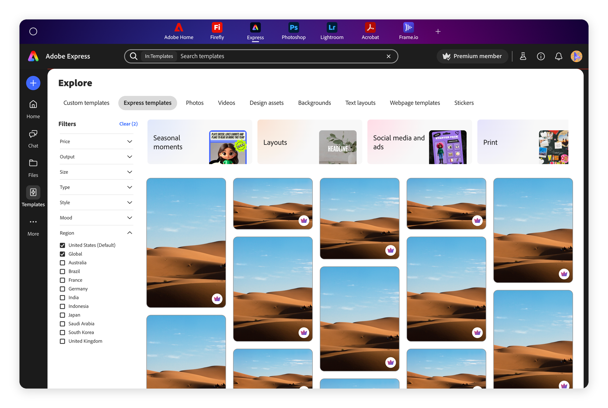
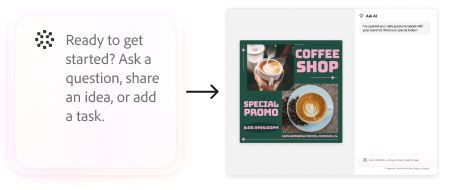
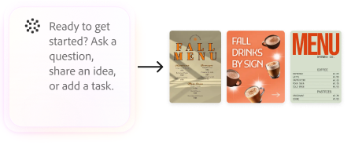
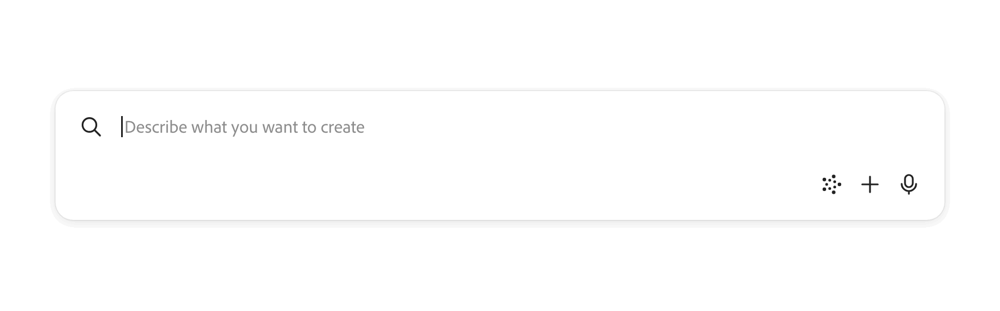
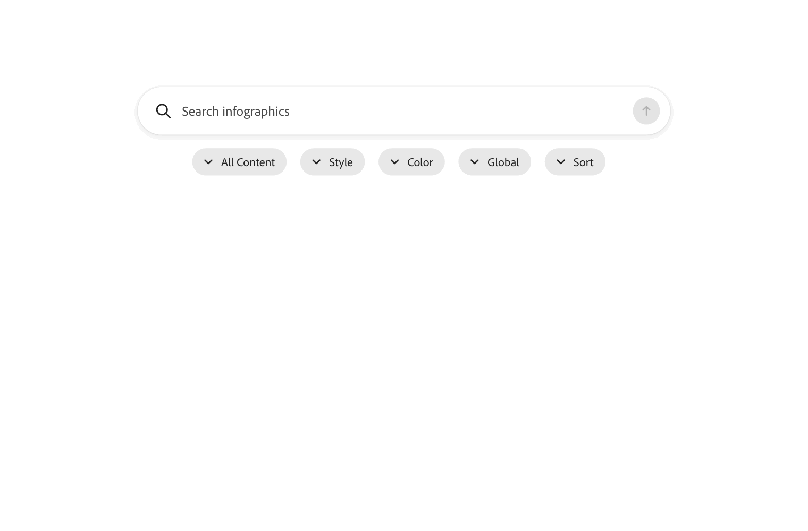
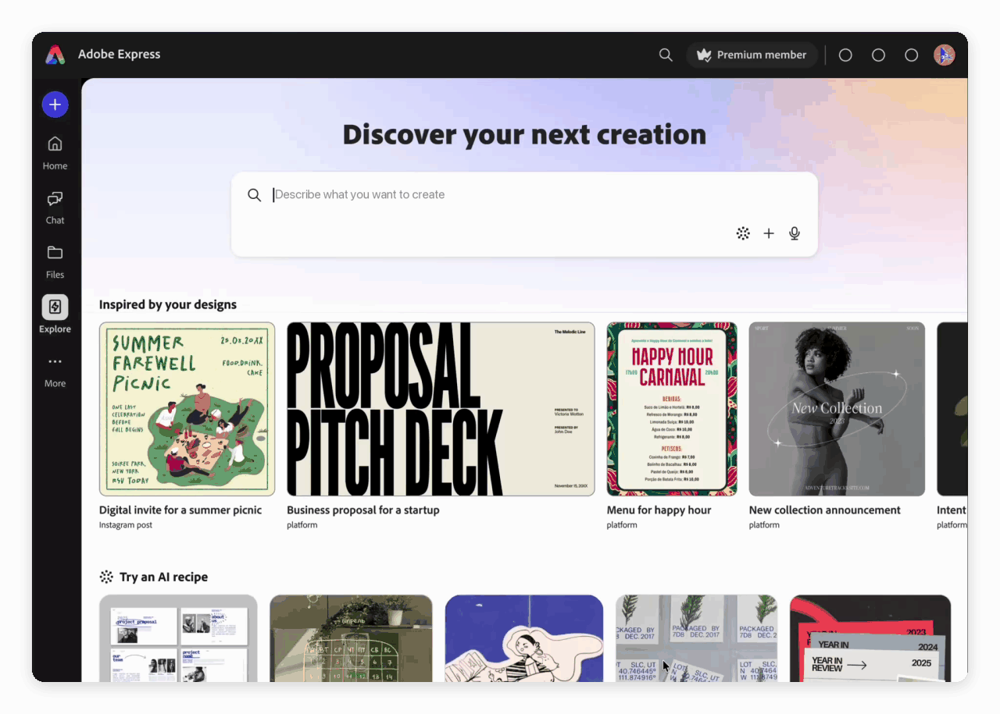
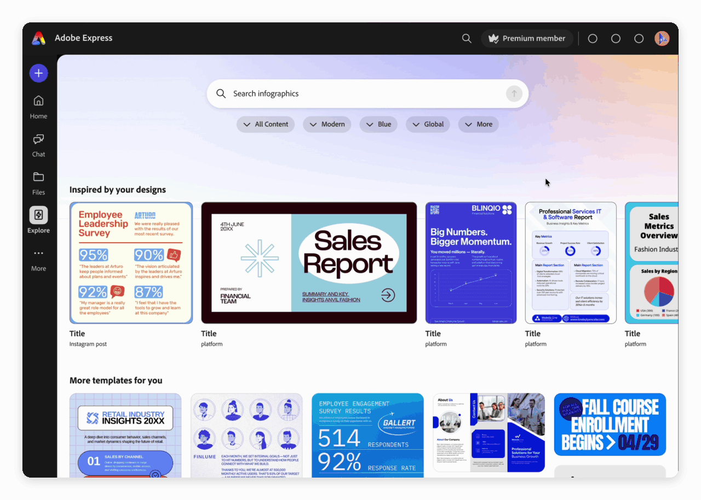

One
Have a clear distinction between prompt and search. Add AI integrations that make sense move away from traditional search
Explore 3.0
Redesigning search & filtering on the Explore page — process, research and solution
Search is one of the main ways people find templates on the Adobe Express Explore page, but only about 41% of searches lead to a click, and that rate has barely moved in a year. This project finds the why and makes filters simpler and adds AI refinement, so people get from search to creating faster.
12 Weeks
Problem

Personalization chips on top, a sort panel on the side
Competing for attention within the layout
189 content categories. Many vague sections
Lack of template relevance, there’s no clear path from search>create
Research
Have a clear distinction between prompt and search. Add AI integrations that make sense move away from traditional search
Hide filters behind a button; consolidate pill tabs and collections
Rethink categories around intent → narrow by size or style
Move the users to an ideal state from Search → Create
Through reiteration and cross team collaboration, we were able to narrow down on priority changes and make decisions for the redesign
A search bar promises results. A prompt bar promises generation


189 categories
Formats most searched
to least
Filtering reimagined

Nudging users on how to search
Further filtering becomes optional
Moving users from a search mindset to create

From research we found users want to customize their content by Style, Color
Moving Price, Gen AI into more filtering and not on the surface
All Content and Language filters to increase content relevance
Solution
A hero bar that guides users to search
Introducing filtering once user searches so it’s intent specific
Personalized templates based on past work and searches
Feature GEN AI tools that can lead them from search>generate


Filter by content, style, color and more
Applied filters turn dark, so current state is visible
Best matches across format, intent specific
Feature GEN AI tools that can lead them from search>generate
Over the next course of 6 months, we monitor
→ A/B test unified filters vs the current layout
→ AI-first prompt testing
→ Search to click conversion, baseline 41%
→ Search abandonment rate
→ GEN AI usage from search